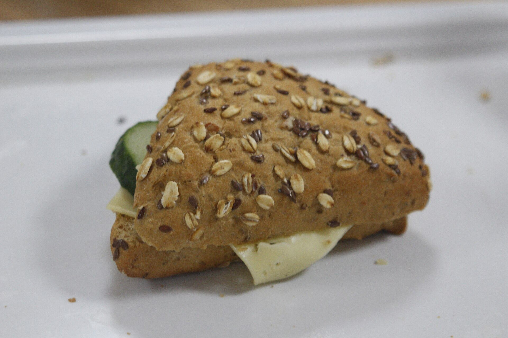

ABOUT
お店の由来と想い
- 歯科医院「Yamamoto Dental Studio」の一角にあるカフェ。2022年5月、医院の福井市照手への新築移転にあわせて誕生。
- 「カフェに行くように通える歯医者でありたい」「生活の一部でありたい」という想いから生まれた、と医院のブログに書かれています。
- 店名は「コーヒー+サンドイッチ」の略とされています(紹介記事より)。
- テイクアウトに対応。店内は小さな席数で、店外にはガーデンベンチがあります(紹介記事より)。
診察の待ち時間や帰りの一息に、もちろんカフェだけの利用でも。患者さんもカフェのお客さんも同じ場所で過ごす、少し変わったやさしい空間です。

MENU
コーヒーとサンド
確認できた内容のご紹介です。価格・提供時間などの詳細は準備中です。



写真はフリー素材のイメージで、店舗の実際の様子・商品ではありません。実際の写真はお店ご提供のものに差し替えます。
VOICE
口コミ(イメージ例)
イメージ例
病院の中にカフェがあるなんて、とびっくり。コーヒーを飲みながらゆっくりできたらうれしいです。
イメージ例
サンドイッチをテイクアウトして、お昼にいただく。そんな使い方ができそうなお店です。
イメージ例
通りかかったら寄ってみたくなる、落ち着いた雰囲気を想像しています。
上記は制作側が作成したイメージ例であり、実在のお客様の声ではありません。